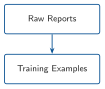
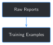

import re
import pdfplumber
FIELD_PATTERNS = {
"well_name": r"WELL NAME:\s*(.+?)\s+JOB:",
"rpt_date": r"RPT DATE:\s*([\d/]+)",
"rpt_num": r"RPT NUM\.?:\s*(\d+)",
"present_operations": r"PRESENT OPERATIONS:\s*(.+?)\nACTIVITY PLANNED",
"activity_planned": r"ACTIVITY PLANNED:\s*(.+?)\n",
}
def extract_text(pdf_path):
with pdfplumber.open(pdf_path) as pdf:
return pdf.pages[0].extract_text()
def extract_fields(text):
fields = {}
for name, pattern in FIELD_PATTERNS.items():
match = re.search(pattern, text)
fields[name] = match.group(1).strip() if match else None
return fields
text = extract_text("datasets/sample_training_set/FORGE-16A-78-32_Drilling_038_2020-11-26.pdf")
print(extract_fields(text))2 Turning Drilling & Completions Reports into Training Examples


Progress ██░░░░░░░░░░░ 2 / 13 · Estimated time: 30–40 min · Difficulty: 🟢 Beginner
2.1 Learning objectives
By the end of this chapter, you will be able to:
- Extract structured fields from a real report PDF with
pdfplumber - Explain what an instruction/response training example is, and why its
outputshould come from the report itself rather than a written summary - Turn a folder of reports into a training-ready
.jsonlfile - Recognize when a report doesn’t match your extractor’s assumptions, and handle that case instead of silently getting it wrong
- Explain why one recognized, well-formed report should still be deliberately held out of training, before fine-tuning ever enters the picture
2.2 Operational Problem
Oumy, still turning over what Chapter 1 showed her, asks the obvious next question: “The report file itself already says what happened, plainly — ‘Present Operations,’ ‘Activity Planned.’ Why can’t we just point the model at that?”
Because a model doesn’t learn from being pointed at a folder of PDFs. It learns from training examples — a specific, structured shape a fine-tuning process (Chapter 5) can actually consume. This chapter turns that folder of PDFs into exactly that shape, using nothing but the reports’ own words.
2.3 Example report excerpt
The same real report from Chapter 1, Drilling_038 (2020-11-26), has two short, plain-language fields sitting right at the top of the form, before any of the technical tables:
NoteSample report excerpt – FORGE-16A-78-32_Drilling_038_2020-11-26.pdf
PRESENT OPERATIONS: PIPE FREE, TRIP OUT OF HOLE FOR BHA INSPECTION
ACTIVITY PLANNED: INSPECT BHA, TRIP IN HOLE DRILL CURVEThese two fields — a snapshot of “what’s happening right now” and “what’s planned next” — exist on every drilling report in this book’s archive. They’re the raw material this chapter turns into training examples.
2.4 Theory
TipEngineering Translation: instruction/response pair
A training example is like a single flashcard: the question you’d ask (the instruction, plus optional input context), and the correct answer (the output), written down together so a model can study from it later. This book uses that three-part shape — instruction, input, output — throughout.
TipEngineering Translation: field extraction
Field extraction means finding one specific labeled piece of information inside a big block of text — the way you’d scan a paper form for the line that starts with “Total:” rather than reading the whole page. This chapter does it with regular expressions (regex): a compact pattern-matching syntax for “find text that looks like this.”
2.5 Why not just write our own summaries?
A tempting shortcut: read each report and write a one-sentence summary by hand (or ask another AI to write one), and use that as the training output. Resist it. The moment a summary is written by anyone other than the report itself, it can be subtly wrong — a detail dropped, a number transposed, a plausible-sounding guess where the report was actually ambiguous — and that error becomes permanent, invisible ground truth. Later chapters build a data quality gate (Chapter 6) and an evaluation harness (Chapter 11) that both assume your labels are trustworthy; if the labels themselves are fabricated, everything built on top of them inherits the mistake.
This chapter’s technique sidesteps the problem entirely: every output below is the report’s own field value, extracted verbatim. Nothing is summarized, paraphrased, or invented. It’s a narrower kind of training example than a rich free-text summary would be — Chapter 7 builds richer ones — but every word of it is real.
2.6 Implementation
2.6.1 Step 1: Extract structured fields from one report
2.7 What problem are we solving?
Before anything can become a training example, you need the report’s raw text, and then the two specific fields inside it — PRESENT OPERATIONS and ACTIVITY PLANNED — pulled out from everything else on the form (casing tables, mud properties, survey data) that isn’t relevant here.
2.8 Inputs
- One report PDF, e.g.
datasets/sample_training_set/FORGE-16A-78-32_Drilling_038_2020-11-26.pdf
2.9 Expected Output
A dictionary of the fields this report actually contains.
Running this exact code prints:
{'well_name': 'FORGE 16A [78]-32', 'rpt_date': '11/26/2020', 'rpt_num': '38',
'present_operations': 'PIPE FREE, TRIP OUT OF HOLE FOR BHA INSPECTION',
'activity_planned': 'INSPECT BHA, TRIP IN HOLE DRILL CURVE'}2.10 What just happened?
pdfplumber read the PDF and returned its text as one long string — column layout flattened, so lines that appear side by side on the page (like a table’s column headers and a row of values) can end up on separate lines here. extract_fields then used regex to find each labeled field regardless of exactly where it landed in that string.
2.11 Production Reality
This regex assumes a specific, fixed field layout — the one every Drilling_NNN report in this archive happens to share. pdfplumber itself doesn’t get everything right either: scanned or handwritten reports don’t have extractable text at all (Chapter 6 covers detecting that). And even for a clean, digital report, a different operator’s form, or even this same operator’s completion reports, can use different field labels entirely — which is exactly what you’ll run into next.
2.11.1 Step 2: Turn one report’s fields into training examples
2.12 What problem are we solving?
Extracted fields aren’t training examples yet — they need to be reshaped into the instruction / input / output triples a fine-tuning process expects, and a report that doesn’t have both fields needs to be skipped rather than silently producing a broken example.
2.13 Inputs
- The
extract_fields()dictionary from Step 1, for every report indatasets/sample_training_set/
2.14 Expected Output
Two training examples per successfully-parsed report; a printed notice naming any report that was skipped.
from datetime import datetime
def normalize_date(raw_date):
return datetime.strptime(raw_date, "%m/%d/%Y").strftime("%Y-%m-%d")
def build_examples_for_report(pdf_path):
text = extract_text(pdf_path)
fields = extract_fields(text)
if not fields["present_operations"] or not fields["activity_planned"]:
return [] # unrecognized field layout -- see Production Reality above
context = (
f"Well: {fields['well_name']} | Report #{fields['rpt_num']} | "
f"Date: {normalize_date(fields['rpt_date'])}"
)
return [
{
"instruction": "What are the present operations reported on this well?",
"input": context,
"output": fields["present_operations"],
},
{
"instruction": "What activity is planned next?",
"input": context,
"output": fields["activity_planned"],
},
]Running build_examples_for_report() on Drilling_038 prints:
[
{
"instruction": "What are the present operations reported on this well?",
"input": "Well: FORGE 16A [78]-32 | Report #38 | Date: 2020-11-26",
"output": "PIPE FREE, TRIP OUT OF HOLE FOR BHA INSPECTION"
},
{
"instruction": "What activity is planned next?",
"input": "Well: FORGE 16A [78]-32 | Report #38 | Date: 2020-11-26",
"output": "INSPECT BHA, TRIP IN HOLE DRILL CURVE"
}
]2.15 What just happened?
Each report becomes two training examples, one per field, sharing the same input context (well, report number, date) so the model can learn to condition its answer on which report is being asked about. normalize_date just makes every date consistently YYYY-MM-DD, since this archive’s own reports don’t all format dates the same way.
2.15.1 Step 3: Build and save the full training set — minus one report, on purpose
2.16 What problem are we solving?
One report is a proof of concept; Chapter 5’s fine-tune needs the whole sample archive, saved to a file the next chapters can load without re-running PDF extraction every time. But if Chapter 5 trains on every report and then tests on those same reports, a good score would only prove the model memorized 18 flashcards — not that fine-tuning taught it anything that generalizes. This step reserves one drilling report, Drilling_037 (2020-11-25), out of the training set entirely, so Chapter 5 has a report the model has genuinely never seen to test against.
2.17 Inputs
- Every PDF in
datasets/sample_training_set/
2.18 Expected Output
A .jsonl file (one JSON object per line — the standard format this book uses for training data) plus summary lines reporting the held-out report, how many examples were built, and how many reports were skipped.
import json
from pathlib import Path
SAMPLE_SET_DIR = Path("datasets/sample_training_set")
OUTPUT_PATH = Path("datasets/training_examples/sample_training_examples.jsonl")
HELD_OUT_REPORT = "FORGE-16A-78-32_Drilling_037_2020-11-25.pdf"
def build_training_examples(sample_dir=SAMPLE_SET_DIR):
examples, skipped, held_out = [], [], []
for pdf_path in sorted(sample_dir.glob("*.pdf")):
if pdf_path.name == HELD_OUT_REPORT:
held_out.append(pdf_path.name)
continue
report_examples = build_examples_for_report(pdf_path)
if report_examples:
examples.extend(report_examples)
else:
skipped.append(pdf_path.name)
if held_out:
print(f"Reserved {len(held_out)} held-out report(s) for Chapter 5's generalization check: {held_out}")
if skipped:
print(f"Skipped {len(skipped)} report(s) with an unrecognized field layout: {skipped}")
return examples
def save_examples_jsonl(examples, output_path=OUTPUT_PATH):
output_path.parent.mkdir(parents=True, exist_ok=True)
with output_path.open("w", encoding="utf-8") as f:
for example in examples:
f.write(json.dumps(example) + "\n")
examples = build_training_examples()
save_examples_jsonl(examples)
print(f"Built {len(examples)} training examples -> {OUTPUT_PATH}")Running this exact code prints:
Reserved 1 held-out report(s) for Chapter 5's generalization check: ['FORGE-16A-78-32_Drilling_037_2020-11-25.pdf']
Skipped 1 report(s) with an unrecognized field layout: ['FORGE-16A-78-32_Completion_003_2021-01-06.pdf']
Built 16 training examples -> datasets/training_examples/sample_training_examples.jsonl2.19 What just happened?
Of the ten sample reports, one (Completion_003) is a completion report using different field labels (Present Ops: / Next 24 Hours: instead of PRESENT OPERATIONS: / ACTIVITY PLANNED:) and gets correctly skipped rather than silently producing a garbage example. A second, Drilling_037, is a perfectly normal, recognized drilling report — it isn’t skipped for a data-quality reason, it’s deliberately withheld from training. That leaves eight reports, each contributing two examples — 16 total. datasets/training_examples/ is generated, not committed to this repository — regenerate it any time by re-running this script (see book/.gitignore).
TipEngineering Translation: held-out data
Held-out data is data you deliberately keep out of training so you have something honest to test on afterward — like a well test string never touched during a workover, kept clean specifically so its before/after readings mean something. A model tested only on the exact data it trained on can’t tell you whether it learned anything general; it can only tell you whether it memorized.
This is a deliberately simple first training set — every output is a single field value copied verbatim from a report, not a rich summary or judgment call. That’s on purpose (see “Why not just write our own summaries?” above), but it also means this training set mostly teaches field recall, not operational reasoning. Later chapters build richer training examples (Chapter 7) and a proper evaluation harness beyond one held-out report (Chapter 11); this chapter’s job is just to get a first, honest training/held-out split in place before fine-tuning ever starts.
2.20 Practical exercise
🟢 Beginner
Try it yourself: run python code/chapter_02/build_training_examples.py from inside book/, then open the generated datasets/training_examples/sample_training_examples.jsonl in a text editor.
You’ll know it worked when: the script prints Built 16 training examples, the file has exactly 16 lines, the first one matches report #3 (Drilling_003, 2020-10-22) — the earliest report in the sample set — and no line anywhere in the file mentions Report #37.
2.21 Field notes
WarningField notes: one field, not the whole story
Query/Action: extracting fields for reports #49 and #50 — the same packers-fail-to-fishing sequence referenced in the author’s previous book.
Result: report #49’s activity_planned is literally "FISHING OPERATIONS" — confirming that real event directly from this archive. Report #50’s present_operations, the very next day, is "TRIP IN HOLE WITH DIRECTIONAL BHA" — not a restatement of “fishing” at all, even though report #49 had just announced it as the plan.
Why: the reports say (report #49, activity planned): "FISHING OPERATIONS"; (report #50, present operations): "TRIP IN HOLE WITH DIRECTIONAL BHA". Each field is a narrow, honest snapshot of one report at one moment — it was never written to also summarize what happened the next day.
Lesson: even perfectly clean, extractive ground truth like this only answers questions about a single report in isolation. Connecting the story across reports — the plan in #49 to the actual outcome by #50 — needs more than two fields from one PDF. That’s exactly why Part II exists: Chapter 9’s hybrid retrieval is what eventually lets a question span more than one report.
2.22 Challenge exercise
🟠 Intermediate
Challenge: extend build_examples_for_report() to also handle the completion report’s different field layout (Present Ops: / Next 24 Hours:, and a two-digit-year date format), so 9 of the 10 sample reports contribute examples instead of 8 (Drilling_037 stays reserved either way — see Step 3). A reference solution is at code/chapter_02/challenge/challenge.py — it produces 18 training examples total, 0 reports skipped.
2.23 Key takeaways
- A training example in this book is an
instruction/input/outputtriple — a single flashcard the model can study from. - Using a report’s own self-reported fields as the
outputavoids fabricating ground truth; the label is never anyone’s guess. pdfplumberplus a handful of regex patterns reliably extracts structured fields from a fixed-form report — but only the form layout it was written for.- Different report types (drilling vs. completion) can use different field labels even within the same archive. Detect and skip what your extractor doesn’t recognize, rather than silently producing a bad example.
- Skipping and holding out are different things done for different reasons: a report gets skipped because your extractor can’t parse it; a report gets held out on purpose, even though it parses fine, so there’s an honest, unseen test left once fine-tuning starts.
2.24 Repository files
| File | Purpose |
|---|---|
code/chapter_02/build_training_examples.py |
Extracts fields and builds instruction/response training examples |
code/chapter_02/challenge/challenge.py |
Reference solution: also handles the completion report’s field layout |
datasets/sample_training_set/ |
The 10 source report PDFs this chapter reads |
datasets/training_examples/sample_training_examples.jsonl |
Generated output (not committed — regenerate by running the script) |
notebooks/chapter_02_explore.ipynb |
Interactive companion notebook |
CautionCHECKPOINT — Chapter 2
Tip✓ WHAT YOU BUILT
build_training_examples.py — turns 8 of the 9 drilling-format reports in datasets/sample_training_set/ into 16 real training examples, saved to datasets/training_examples/sample_training_examples.jsonl. The 9th, Drilling_037, is reserved untouched for Chapter 5’s held-out generalization check. Chapter 5 fine-tunes on data built exactly this way, at a larger scale.
2.25 What can you do now that you couldn’t do before?
You can turn a folder of real, inconsistently-formatted report PDFs into a training-ready dataset without inventing a single label — and you know precisely which reports your extractor handles and which it doesn’t, instead of hoping.
2.26 Suggested next step
Coming up in Chapter 3: before spending any time actually fine-tuning, Chapter 3 runs a proper baseline test — the base model against a batch of real questions drawn from the 16 training examples you just built — so you have hard, reproducible evidence of exactly what it gets wrong, and something concrete to compare Chapter 5’s fine-tuned model against afterward. Drilling_037, held out here, stays untouched until Chapter 5.